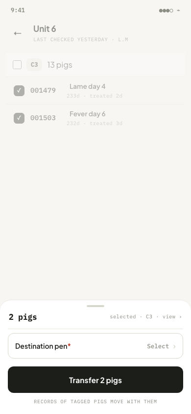
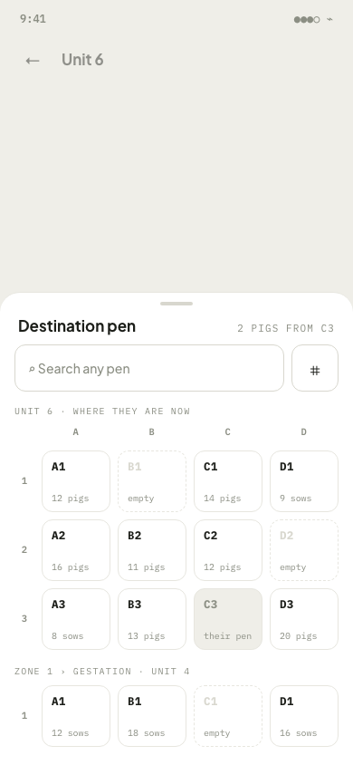
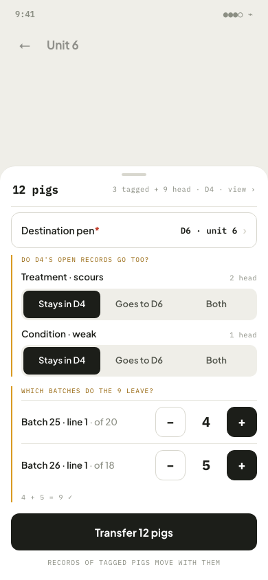
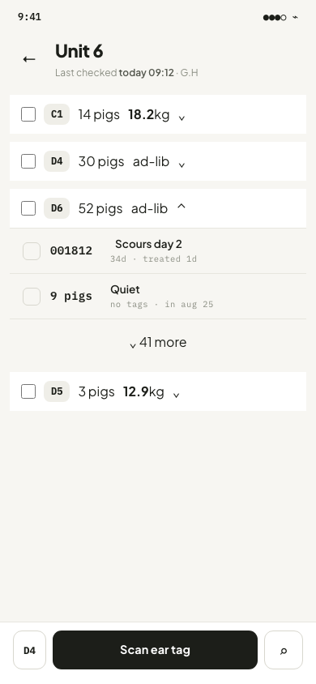
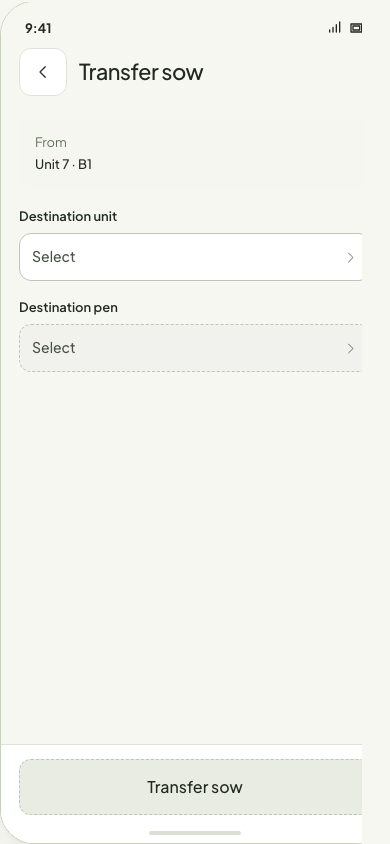

离线与结果不明 · Q6
建议每笔转舍有稳定操作 ID、来源版本和结果查询。断网只说“保存在本机”，回执未明不能重发后宣称成功；第二位工人先转走时保留冲突供核对。
下面五张 390 × 844 实图来自当前仓库页面。它们是待评审的设计基线，状态均为 in-design。本轮先请负责人裁定影响业务结果的规则；画布达成一致前，不把新设计写进原型或 atlas。
从左到右是一笔按需转舍的现有四张实图。第 1 张只显示有身份猪；第 3 张展示有身份与无身份头数混选。目的栏选择填回核对页，最后的主按钮才提交。




这张实图由母猪记录进入 Actions，再点 Transfer sow 得到；现有 `move.transfer-sow` 的 atlas step 只停在 Actions，未到本表单。表单使用“单元 → 栏位”两字段，与上面的统一目的栏选择器不同。

静态页面无法证明真实保存与跨设备结果。下面这些状态进入场景树和决定表；本轮画布不把它们画成已经可用的原型。
建议每笔转舍有稳定操作 ID、来源版本和结果查询。断网只说“保存在本机”，回执未明不能重发后宣称成功；第二位工人先转走时保留冲突供核对。
生产线“状态、任务或节点触发”目前只有字段帮助文字。触发、目标、指派、生命周期及完成口径定下后，再从 Workbench 连接到转舍执行。
目前只有菜单和历史抽屉。建议它生成带稳定 ID 与目标群体的任务；在契约明确前，不能把菜单文案当移动端执行规则。
支持移动端按需转舍的单猪、多猪、无身份头数和混选场景。Console 制单、生产线配置、离场与库存移动列为本功能暂不支持，跨功能入口各自交接。